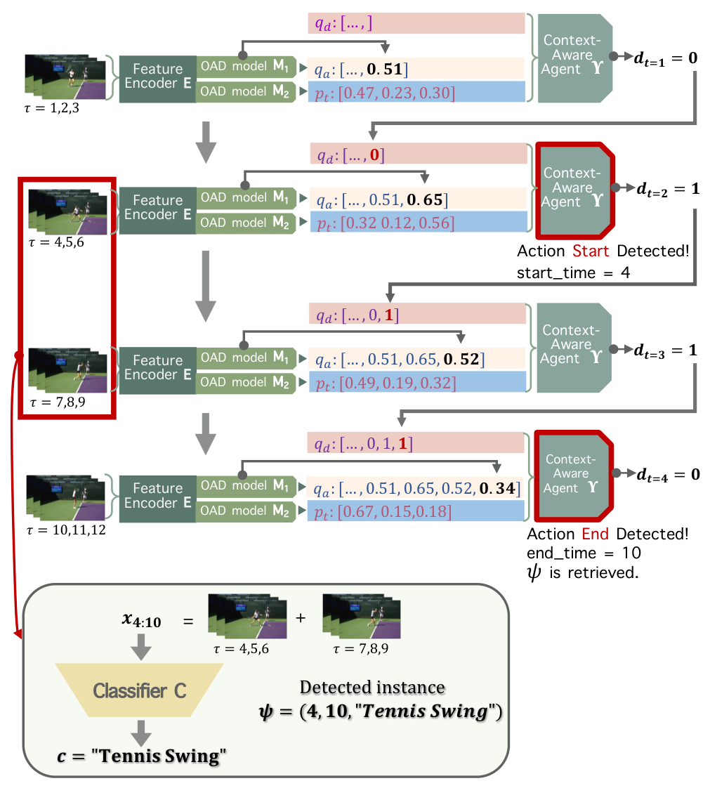
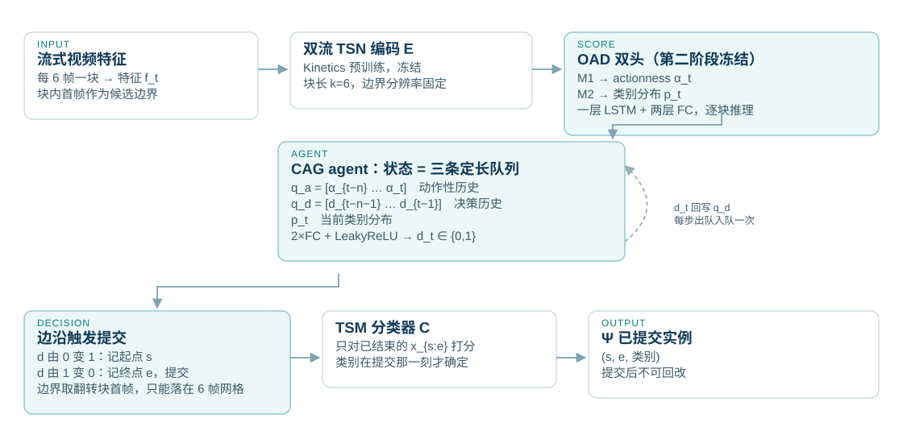

可直接借它的提交判据约束历史写入：实例只在决策由 1 翻回 0 时落盘、落盘后不可改；代价是写入被推迟到动作结束之后，类别也只能在提交时确定。
- 最小可复用件
- 由
[α 队列, d 队列, 类别分布]三项拼成状态、输出 0/1 的两层 FC 提交器，配合「0→1 开、1→0 关」的边沿触发写入规则。 - 主要风险
- 提交发生在动作结束之后：对需要边发生边响应的机器人，这段延迟是结构性的，不是调参能消掉的。
- 复现门槛
- 需要预训练 OAD 模型输出的逐帧 actionness 与类别序列、逐帧 ground-truth 决策标签；单卡可训，agent 本身极轻量。
1. 核心摘要
论文定义了 Online Temporal Action Localization（On-TAL）：在无裁剪的视频流上即时产出动作实例，不能访问未来帧，实例必须在动作结束的下一步就给出，且已产出的 proposal 不允许回改，因此 NMS 一类后处理整体失效。作者指出把二值 OAD 分数按阈值切段会稳定地犯两种错：动作刻痕（action tick，α 在阈值附近抖动产出一两帧的假实例）与动作碎裂（fragmentation，一个实例被切成多段），根因是模型不看自己的决策历史。CAG 保留帧级 α，但把「这一帧是否属于正在书写的实例」抽成独立二值决策 d，由一个上下文感知 agent 读取最近若干步的 α 队列、历史决策队列与当前类别分布后逐帧给出。训练不用手写 reward，而用 SQIL 的 hard-Q 变体从专家轨迹学 Q 函数（QIL）。THUMOS14 测试集 tIoU 0.3 上 mAP 由阈值分组的 33.3 升到 44.7。判定：这是本专题里唯一把「提交时机」本身当作学习对象的 P0 工作，代价是提交必然滞后于动作结束。
2. 事件流水线定位
主贡献在边界定位：把「一段动作到哪里结束」变成逐帧的二值提交决策。它同时定义了写入的触发条件，所以记忆写入标为部分覆盖——写入动作本身发生在这里，但写入内容的语义（类别）要等实例闭合后才产生。上游假设已有一个可在线运行的 OAD 模型给出 α 与类别分布；下游假设实例一经产出即可直接使用，不再有去重与合并。
| 环节 | 内容 |
|---|---|
| 输入 | 每 k=6 帧经 TSN 双流特征编码后的 f_t；两个队列（α 队列、决策队列）与当前类别分布 p_t |
| 输出 | 决策 d_t∈{0,1}；在 1→0 的翻转步产出 ψ=(s,e,c)，类别由独立的 TSM 分类器在 x_{s:e} 上给出 |
| 交给下游 | 不可回改的实例集合 Ψ；没有 NMS、没有跨实例合并、没有置信度阈值二次筛选 |
3. 问题与动机
论文 Figure 2 把失效模式写得很具体。第一种是刻痕：α 序列 0.34、0.41、0.53、0.45、0.41、0.33，只有第三帧越过 0.5，阈值分组就产出一个长度为一帧的实例。第二种是碎裂：α 在 0.45 到 0.49 之间反复下探，一个完整动作被切成若干段，每段都在阈值下短暂消失过。两种错误同源——阈值分组只看当前帧的分数，不看上一步做过什么决定，也不看这个决定把后续状态推到了哪里。
把状态直接映射到决策的监督学习（论文称 Behavioral Cloning）在这个问题上失败得很彻底：THUMOS14 上 mAP@0.3 只有 6.4，低于它试图改进的阈值基线 33.3。原因是 BC 完全忽略转移动态，一旦采到训练分布外的状态（自己做出的错误决策造成的），就无法判断该往哪走，误差还会复合。
换成强化学习后，瓶颈转到 reward 设计。Figure 4 的两条决策序列在逐帧 ±0.1 下累计奖励都是 0.6，可从分组角度看前者明显更好；给「连续正确」加权又会奖励长实例，对刻痕无效。作者的解法是让专家轨迹整体定义什么算好，而不是逐帧凑奖励项。
4. 方法拆解

原图：论文 PDF 第 4 页 Figure 3，按图区域裁切（图注不并入图内）。原图以 k=3、3 类为例：每块（τ=1-3、4-6 …）经 E 编码，M1 给 α_t、M2 给 p_t；agent Ψ 读入 q_d、q_a、p_t 输出 d_t，0→1 记 start_time，1→0 记 end_time 并检索类别 c，最终实例为 ψ=(4,10,"TennisSwing")。

本站重绘：把原图术语对到「候选生成 → 提交 → 记忆写入」的判据，标出块长 k=6、队列长度 n 与提交后不可回改的位置。
4.1 输入与时间表征
每 6 帧经双流 TSN（Kinetics 预训练）编码成一个特征，边界分辨率因此被 k=6 钉死，与回归头精度无关。第一阶段用交叉熵训练 M1（actionness α_t）与 M2（类别 p_t），两者都是一层 LSTM 加两层 FC；第二阶段冻结它们，预先算出全视频的 α、p 序列来构造专家库。类别由独立 TSM 分类器 C 在实例区间上给出。ActivityNet1.3 上特征序列被线性插值到 100 步，这需要整段视频长度，与严格在线存在张力。
4.2 关键机制
状态是三个量的拼接，没有注意力：q_a=[α_{t-n},…,α_t]、q_d=[d_{t-n-1},…,d_{t-1}]、p_t。agent 为两层 FC 加 LeakyReLU，输出 d∈{0,1}，每步对两条队列出队入队各一次，上下文长度被 n 硬截断（正文只给符号 n，取值未在已核验的公开材料中确认，Figure 6 示例画了 5 个槽位）。「context-aware」的落地就是这两条定长队列加一次拼接。
推理时的分组规则可以完整写成下面几行，这是本页最值得抄走的部分：
for t = 1 … ⌈T/k⌉:
f_t = E(x_{k(t-1):kt}); α_t = M1(f_t); p_t = M2(f_t)
q_a ← [q_a[1:], α_t]
d_t = Υ(q_a, q_d, p_t)
if d_{t-1}=0 and d_t=1: s = k(t-1)+1
if d_{t-1}=1 and d_t=0: e = k(t-1)+1; ψ=(s,e,C(x_{s:e})); Ψ←Ψ∪ψ
q_d ← [q_d[1:], d_t]
三点实现含义。提交是边沿触发：d 持续为 1 不产生输出，只有 1→0 才闭合实例。起点与终点都取翻转块的首帧 k(t-1)+1，边界只能落在 k 帧网格上，且闭合时当前块算背景、不计入实例。类别延后计算：C 用已结束的整段 x_{s:e}，系统到提交那一刻才知道这是什么动作。
训练信号用 SQIL 的 hard-Q 变体。专家转移固定给 +0.1，agent 自己采到的转移固定给 −0.1，两边共用同一个自举目标：
δ²(D,r) = mean_{(s,d,s')∈D} ( Q_θ(s,d) − ( r + γ·max_{d'} Q_θ(s',d') ) )²
θ ← θ − η·∇_θ[ δ²(D_expert, +0.1) + δ²(D_agent, −0.1) ]
作者去掉了 soft-Q 的最大熵项，理由是 CAG 一步决策错就可能造成刻痕或碎裂，鼓励探索是纯负担。抑制过早提交不靠某条奖励规则，而靠自举结构：d_t=1 的价值含 γ·max Q(s_{t+1},·)，开得太早导致碎裂时，后续 agent 转移拿 −0.1，代价沿 γ 回传；专家轨迹又要求整条轨迹而非逐帧最优，「先开一帧再关掉」在专家数据里不存在。论文没有显式延迟惩罚项，也未报告 γ 取值。
4.3 输出与在线边界
严格因果：d_t 只依赖 t 及之前的 α、d、p；C 用的 x_{s:e} 也全是过去帧。历史是定长滑动窗口，由 n 截断，不是全历史。延迟有二：结构性延迟，实例必须等动作结束才能提交；特征块延迟，闭合处边界取块首帧。论文报告完整流程 29.4 fps，瓶颈是光流（6 帧堆叠 126 ms），不是 agent。ODAS 实验也印证了这条延迟：为公平比较，作者改用起点处的 p_t 而非 C 的全实例分类结果。
5. 证据与实验
数据集：THUMOS14 共 413 个视频、20 类，200 训练 / 213 测试；ActivityNet1.3 共 19994 个视频，按 2:1:1 划分，平均每视频只有 1.5 个实例，作者自己指出它并不最适合本任务。指标为多 tIoU 下的 mAP，THUMOS14 取 {0.3,0.4,0.5,0.6,0.7}，ActivityNet1.3 取 {0.5,0.75,0.9}。下表取自 Table 1（THUMOS14 测试集）：
| 方法 | mAP@0.3 | mAP@0.5 | mAP@0.7 |
|---|---|---|---|
| OAD-Grouping（阈值分组） | 33.3 | 22.0 | 10.4 |
| OAD-Grouping + 时间平滑 | 38.3 | 24.9 | 10.7 |
| CAG-BC | 6.4 | 3.3 | 1.5 |
| CAG-RL | 32.8 | 22.2 | 10.8 |
| CAG-QIL | 44.7 | 29.8 | 14.5 |
几个可直接用于判断的点。时间平滑把 0.3 拉到 38.3，但需回看固定窗口、无法在线运行，不算公平基线。CAG-RL 几乎没超过阈值分组，作者用 proposal 数量解释：5641 对 4841，说明逐帧奖励没抑制碎裂。去掉类别分布的 CAG-QIL w/o p_t 为 43.0 / 27.2 / 12.4，作者据此论证 p_t 有用，但没分析它靠什么线索起作用。ActivityNet1.3 验证集（Table 2）上为 30.5 / 18.5 / 4.1，阈值分组 28.1 / 15.7 / 3.3，它是表中唯一超过基线的训练方式。Table 4 用四次不同 OAD 权重给出相对提升：tIoU 0.3 平均 +12.6（标准差 1.1），0.5 为 +7.5，0.7 为 +3.5，BC 在所有档位都是负值。
与离线方法比较（Table 3），CAG-QIL 的 44.7 与单阶段离线方法（SSAD 43.0、SS-TAD 45.7）相当，明显低于两阶段方法（G-TAD 54.5、G-TAD+P-GCN 66.4），作者把这解释为在线约束下的合理代价。ODAS（Table 5）上，CAG-QIL 在 1 至 10 秒的全部偏移上 p-mAP 从 20.3 升到 49.8，超过 StartNet-PG 的 19.5 至 39.8，而它并未针对该任务训练。
6. 优点、局限与 VLA 适配
可迁移
边沿触发的写入规则，以及用整条专家轨迹而非逐帧奖励定义好决策的训练思路。前者给历史写入一个明确且不可回改的时刻；后者省掉了为「早写一点、晚写一点」手工拼奖励项，而这在 VLA 里更难调，因为写错的代价过很久才显现。
不成立的前提
它假设实例互不重叠、类别空间固定、语义可以延后到实例结束再算。机器人历史里的事件常常嵌套或并发，且下游经常需要在事件发生中就拿到语义去决策，「提交即定型」会直接卡住控制回路。
论文没有命名状态，但按 d 的取值与翻转点可映射成三段：pending 是 α 已升高而 d 仍为 0 的区间，只有证据没有实例，不能进检索；active 是 d=1 的区间，实例仍在增长、边界未定；committed 是 1→0 的那一步，(s,e,c) 落盘并进入不可回改区。这条映射给出一条硬规则：允许把当前事件升级为已提交记忆的唯一时刻，是决策从 1 翻回 0 的那一步，而不是分数首次越线的时刻。
不可回改的代价被放大两次。边界上，e 一旦写入就固定，后续发现动作还在继续也无法延长，只能另写一条，历史里留下一个被截断的事件。语义上，类别在提交时才算，判错就会以「已确认事实」的形态进入检索与后续推理，没有置信度回落通道——论文只报 mAP 与 p-mAP，没度量错误写入被下游使用后的代价。最小改造是保留边沿触发，在 committed 之外加一层带 TTL 的 staging：提交仍只发生一次，写入后允许在有限窗口内被后续证据标记为可疑，而不是直接删改。
7. 落地清单
- 固定
d的 0→1 与 1→0 为唯一写入触发点，把s、e写成不可变记录，任何后处理只能追加新记录。 - 在日志中同时记录 α、d、提交时刻与实例长度，用 proposal 数量复现论文对 CAG-RL 的诊断（5641 对 4841）。
- 先跑 BC 版本做健全性检查：若它的指标没有明显崩塌，先怀疑特征或标签对齐有泄漏。
- 为错误提交单独计代价，把不可回改的误写入计入下游检索命中率与控制失败率，不要只看 mAP。
- 用阈值分组与时间平滑作为下界与上界基线（THUMOS14 上 33.3 / 38.3 @tIoU0.3），新模块必须超过下界才算有效。
来源：Hyunjun Kang, Kyungmin Kim, Yumin Ko, Seon Joo Kim. CAG-QIL: Context-Aware Actionness Grouping via Q Imitation Learning for Online Temporal Action Localization. ICCV 2021, pp. 13729–13738. 开放版 PDF：openaccess.thecvf.com（2026-11-17 核对）。代码：github.com/musicalOffering/CAG-QIL。本页数字取自该 PDF 的 Table 1、2、3、4、5 与 5.4 节正文；论文未提供 arXiv 版本链接，故页首只列 CVF 论文页。
图像说明：首图为作者原图 Figure 3，取自 CVF 正式版 PDF 第 4 页，按该图包围盒裁切（figures/fig3_overview.png，300 dpi），不含图注、正文、页眉页脚；作者未公开 LaTeX 源码。第二张为本站重绘的管线速查图（figures/pipeline.svg），标出块长与提交后不可回改的位置。Figure 2（action tick 与 fragmentation）见 PDF 第 3 页。
相关页面：DDM-Net · Hierarchical Event Memory · KEMO · 返回总站